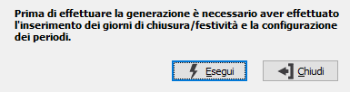

Generazione date periodi
Il programma effettua la rigenerazione della tabella relativa alle date dei periodi del calendario utilizzata nelle procedure di produzione ed ordini clienti per il calcolo delle date di produzione, consegna ecc.
è quindi essenziale effettuare questa generazione qualvolta vengono inseriti o modificati valori nella tabella Giorni chiusura/assenza.
La procedura di generazione esercizio si preoccupa già di effettuare in automatico la generazione delle date periodi dopo aver generato i dati relativi alle chiusure/assenza duplicandoli dall'anno precedente.
